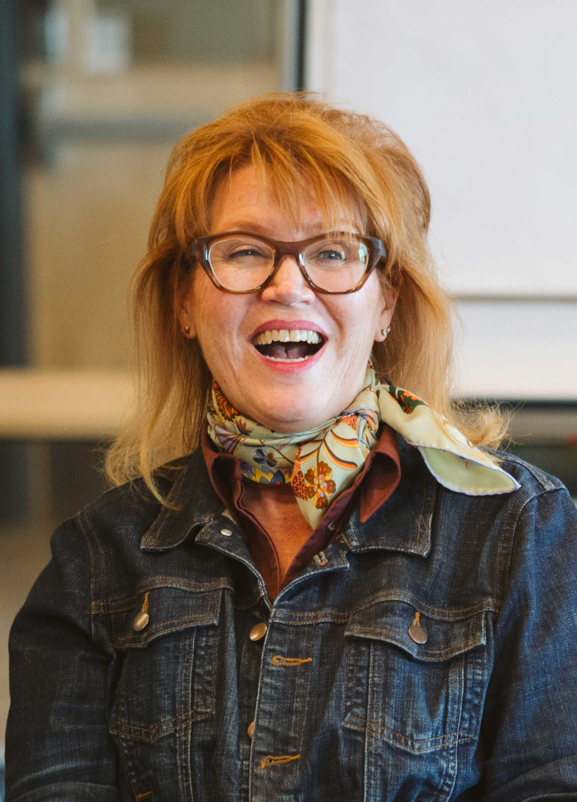
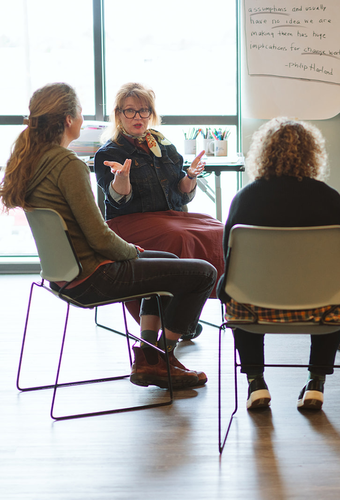

Individual Coaching
Become the leader you have the potential to be. One-to-one work for academics, executives, and public-sector leaders ready to move objectives from someday to done.
For academics, executives & leaders Explore →Practical, bespoke coaching for academic and organizational leaders, teams, and the coaches who guide them — through the kind of change that doesn't come with a playbook.

Trusted by leaders, teams & coaches at


What they need is someone who will ask the question that cuts through — and then sit with them in the answer. That's the work. I combine a practical, grounded nature with deep humanity. I might ask you questions like "What scares you about that outcome?" or "How does this bruise you?"
Whether it's one leader, a whole team, or another coach, the approach is the same: deep listening, powerful questions, and a nudge from alongside — not a shove from in front.
Become the leader you have the potential to be. One-to-one work for academics, executives, and public-sector leaders ready to move objectives from someday to done.
For academics, executives & leaders Explore →Crafting systems that stay intelligent, generative, and creative. Bespoke work for teams and institutions in the middle of restructures, reboots, and real change.
For teams, boards & institutions Explore →Expand your range as a coach. Accredited team-coaching supervision and mentor coaching — a step toward mastery of the craft, for the coaches doing the holding.
For internal & agile coaches Explore →
Not the board — the people standing in front of it. So I followed that, first through co-active coaching, then ORSC (Organizational, Relationship & Systems Coaching). That's when the work started to land differently: bigger, slower, more lasting.
I'm not finished learning how to do this well. I don't expect to be.
I grew up in Montana, which means I know what it looks like when something has been building for a long time before it finally breaks open. I work with agile coaches, organizational leaders, and teams navigating the messy middle of real change.
Read Erin's story →Netflix documentaries is calling me this afternoon — and that was an off-handed goal I put out there last year.Dr. Jessica MurfeeUniversity of Cincinnati
I don't want to use the term life-changing, though it was.Dr. Jenna YentesTexas A&M University
Before we met, I was surviving — but I was also sacrificing my sanity to get things done.Team CoachNike
Rather than providing answers, she empowered me to develop my own solutions and grow into a stronger, more self-aware leader.
Erin's sessions were the highlight of our onsite and a favorite experience across the team. We look forward to having her back.Team Coaching ClientOnsite Engagement
Erin helped me rediscover my confidence, refine my story, and show up authentically. I truly believe I wouldn't be where I am today without her.
Three days learning Clean Language — a way of working with others that can change how you think, talk, and collaborate. Co-hosted with Dr. Caitlin Walker and Emily Stifler Wolfe.
A free consult is the lowest-commitment way to find out. No pitch — just a real conversation about what's actually moving for you.